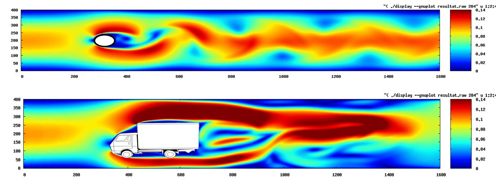
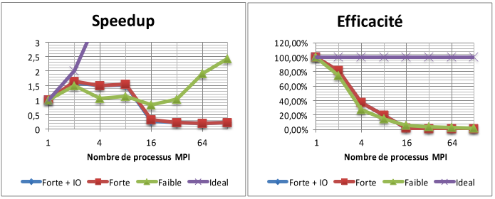
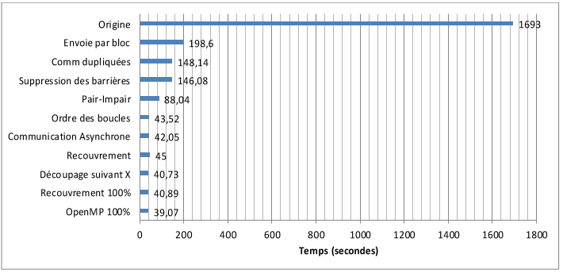
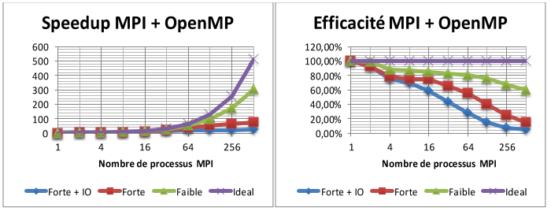
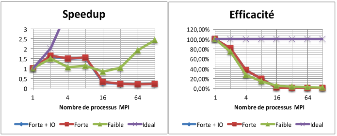
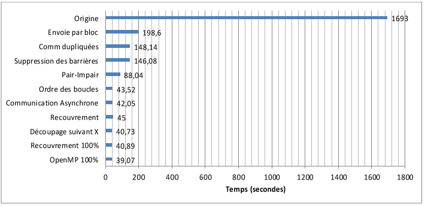
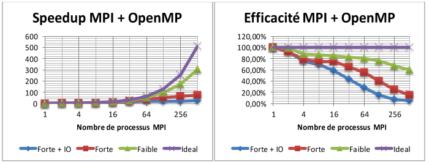

2024
4 courses given in the summer school about HPC
- Tests unitaires une philosophie et une aide face à son logiciel
- Allocations mémoires, Pourquoi et comment profiler ?
- Genie logiciel par la pratique collective, exemple simple et drole.
- Impate de l'OS sur les performances, ouvrons le capot !
Course and TD/TP Testing in programing
2024
10h of course and pratical sessions for master 2nd years info at univeristy Savoie Mont Blanc
Needed to bootstrap the course and create everything from scratch.
- Unit tests (python)
- Integration tests
- Contiguous Integration
- Mocking
- Code coverage
- Continuous Integration
- Humain aspects, team dynamic
- Mutable testing
Course and TD/TP Testing in programing
2023, 2023
32h of course and pratical sessions for BUT 2nd years
Needed to bootstrap the course and create everything from scratch.
- Project documentation (docstring, sphinx, pdoc, readme)
- Unit tests (python)
- Integration tests
- Contiguous Integration
- Mocking
- Code coverage
TD/TP operating systems
2021, 2022, 2023
24h of pratical sessions in Master 1 l'IM2AG of Grenoble
With Vania Marangozova
Pre-existing subjects
- C recaps
- Memory allocator
- Bufferized IO
- Threading (pthreads)
- Performance evalutation
C project, graphical library (widgets)
2020
24h of student project supporting at the engineering school ENSIGMAG at Grenoble
Pre-existing subject.
With François Bérard
- Building a graphical library (widgets)
- C object oriented
- Rendering hierarchy of widgets
- Dispatching events
- Making line, square, shapes rendering
- Widget rendering buffer handling
TD/TP parallel programing, MPI OpenMP
2019, 2020
18h of pratical sessions for the Master 1 of IM2AG from Grenoble
Pre-existing subjects, also rewrote a pratical sessions on last year.
With Thomas Ropars.
- Basic OpenMP routines
- Matrix basic operations in OpenMP
- Sorting algorithms in OpenMP
- MPI routines, point to point and collectives
- Matrix operation in MPI
- Rewrote the evalutation topic : adapting the LBM simulation to learn using MPI on a real stencil case (subject, sources).
TD/TP Shell Unix/Linux
2019, 2020
21h de TP pour les 1ère année de l'IUT informatique de Grenoble
Sujet pré-existants : ici.
With Laurent Bonnaud.
- Basic commands to move in directories and list
- Configuring the environnement
- Scripting
- Searching in files
- Query quotas, storage size, file sizes...
TD/TP system adminitration
2013, 2014
Practical sessions for ISTY 3rd year.
Rebuilt all the pratical sessions from scratch:
-
TP1 : Noyau, amorce et paquets. Le but de cette séance est de comprendre l’installation Linux (partition, paquets...) en utilisant la distribution source Gentoo.
-
TP2 : Suite TP1, Compilation noyau, variable d’environnement, ssh, redimensionnement avec
lvm. Toujours sous Gentoo, le reste des TP se fait ensuite sous Debian.
-
TP3 : Routeur réseau, dhcp, cache DNS.
-
TP4 : Server NFS, apache/mysql/tomcat.
-
TP5 : LDAP in intégration au session d’un noeud.
-
TP6 : Sauvegarde et restauration, différentes approches et appliqué sur différents services (mysql,
home...).
TD/TP Optimisation parallèle MPI/OpenMPI
2011, 2012, 2013
With Marc Pérache.
Pour le master 1 MIHPS. Séances de 3 heures, sujets créés conjointement avec Jean-Baptiste Besnard. Le cours contenait
notamment une double séance sur une simulation numérique MPI à optimiser (LBM: Lattice Boltzmann Method).

Pour ma partie:
TD 6, Threads (OpenMP) et synchronisation, les couts cachés, effets de mutex, cache et opérations atomiques.
Séance 8 : Séance d’examen suivie d’un retour sur le projet et correction.
Architectures matérielles (ISTY 2)
2010, 2011, 2012, 2014
With William Jalby.
TP de 3 heures pour les ISTY 3ème année. Pour ma partie:
-
TD5: Pipelining d’un processeur, construction des vecteurs de collisions d’utilisation de ressource
-
TD6 : Achitecture superscalaire, compilation optimisée à la main de petites boucles sur architectures type itanium concernant l’allocation d’unités de traitement.
-
TP7 : Programmation d’un protocole expérimental. Méthode de mesure de temps d'exécution de noyau de calcule.
-
TP9-10 : Présentation et analyse de résultats, utiliser un protocole expérimental pour comprendre
son architecture et son code.
Student master course project, parallel MPI/OpenMPI optimization - LBM
2010, 2011, 2012, 2014
This muti-practical sessions where about training students to discover and tune a "real" application (2000 lines) they cannot understand in one second just by reading code. The goal is to get a non
optimized MPI simulation and make the work with tools.

I mainly tried to run students codes myself on large scale cupercomputer up to 512 cores to give them nice feedback to learn scaling issues.
My tuned version of this code in MPI+OpenMP with more optimization that what is listed here has run and nicely scaled up to 2000 cores on the Curie supercomputer also at lower scale in a MPI+OpenMP+CUDA mode.
You can find in this report (in french sorry, need to take time to translate one day) all the optimization steps if you want to learn way to proceed.
DISLAMER: before reading and applying blindly those steps, do not forget optimizing is first to think about your requirements and way to adequatly match them to your hardware. There is no magic rules to apply in any case without thinking and checking. Do not forget hardware evolves and way to optimize too and can be 180° compared to old ways.
Optimization detailed guide (FR)
 




